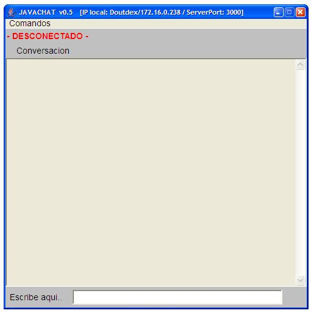
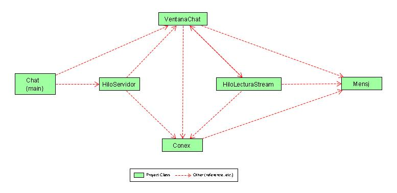

Proyecto Java
;o POLITECNICO GRAN COLOMBIA INGENIERIA DE SOFTWARE

INTEGRANTES:
JULIAN FELIPE RODRIGUEZ AGUILAR ;os
-K
AT elo DOT utfsm DOT cl
2021018-4
rorellar AT elo DOT utfsm DOT cl
DESCRIPCIÓN:
Nos enfrentamos a un problema basado en la necesidad de comunicarnos en red cuando alguien visita nuestra pagina y necesita mas informacion, para ello se implementó una solución bastante simple que nos permite establecer una conexión directa entre 2 computadores (PCS), a través de la IP y de un puerto para establecer una conexión directa.
REQUERIMIENTOS:
-¿Problemas
con el msn en red ELO, puertos bloqueados?
Debido a esto surge la idea de crear una herramienta
que sirva para realizar nuestras conversaciones a través de la red.
- Puede correr en Windows, Linux, mac?
Comunicación independiente de la plataforma
-Interfaz amigable que permita ver nuestrtos mensajes
enviados y los que nos envian.
DESARROLLO:
Creamos
una ventana para hacer un Chat y desde este se lanza un hilo que nos permite
atender las llamadas entrantes
podemos crear tantos servidores como ventanas quisieramos.
Para conectarnos a otro PC (el cual se comporta como cliente y servidor) .
Lo hacemos desde la ventana de un servidor, colocando su ip y su puerto. Entonces
tenemos dos hilos que manejan al servidor y al cliente al mismo tiempo, es la
idea de paralelismo.
Una vez que hemos establecido la conexión estamos en condiciones de enviar
y recibir mensajes.
Para terminar la conversación se detiene el hilo del cliente o lector
y se indica que no hay conexión con ese lector.
CASOS DE USO:
INICIAR CONVERSACIÓN
SIMPLE
-ACTOR: personaje1
-Descripción: personaje1 inicia una espera como servidor.
-El sistema responde desplegando una aplicacion que muestra que ha iniciado.
-personaje 2 se conecta a la ip y puerto del personaje1.
-El sistema muestra al personaje1 que esta conctado al personaje2 y viceversa.
-El personaje1 escribe mensaje al personaje2.
-El sistema muestra al personaje2 el mensaje escrito por el personaje1.
-El personaje2 responde.
-El sistema muestrtra la respuesta al personaje1.
CONVERSACIÓN CON DISTINTOS USUARIOS
-Actor1: personaje1
-Actor2: personaje2
-Actor3: personaje3
-Descripción: personaje 1 inicia como servidor
-El sistema muestra que inicio el personaje1
-Personaje2 inicia como servidor y se conecta a la ip y puerto del personaje1.
-Sistema muestra a los personajes 2 y1 que estan conectados.
-Personaje3 inicia como servidor y se conecta a la ip y puerto del personaje1.
-Sistema muestra a los personajes 3 y 1 que estan conectados.
-personajes 2 y 3 responden a los mensajes del personaje 1.
TEST:
-1º Se ejecutó el programa solamente en un PC, medianto la consola, ultilizando el procedimiento descrito en la página, estableciendo una conexión así mismo, esto resultó satisfactorio, puesto que el programa trabaja con hilos, los cuales hacen que sean independientes.-2º lo probamos en dos PCS dentro del mismo sistema operativo Windows 2000, estableciendo la conexión para cada uno de los PCS, al introducir su ip y puerto remoto, resultando nuevamente exitoso, vale decir, que para logar el éxito se tuvo que estar iterando en muchas ocasiones, para llegar al resultado final.
Procedimiento:
Se intentó
ejecutar el programa una vez compilado desde consola DOS dentro de la plataforma
Windows 2000 Pro, con el comando:
>> java Chat 25555
Donde 25555 es el puerto que se asigna al servidor, el cual queda listo para
las peticiones desde los clientes, una vez iniciado el proceso, se abre una
ventana la cual está inactiva, pues todavía no se ha realizado
una conexión, para esto se va al menú dentro de Nueva Conexión,
estableciendo el IP Remoto y el puerto del servidor remoto, para luego establecer
la conexión.
DIAGRAMA:
Nuestro diagrama tiene
su inicio en la clase Chat la cual al ejecutarla genera un hilo para el servidor
creando una ventana para alojar la conversación, desde la ventana podemos
interactuar
con el lector a atraves de una conexión, una vez hecha la conexion el
hilo lector puede directamente contactarse con el mensaje a atraves de la ventana
y el servidor puede leer sus
mensajesa través de la conexión establecida.
A traves de la ventana podemos detener el hilo del lector se cierra la conexión
y ya no se puedenenviar mensaje.

DOCUMENTACIÓN:
Documentación de las clases utilizadas
REFERENCIAS:
http://java.sun.com/j2se/1.5.0/docs/api/java/net/Socket.html